Science Pulse
системный атлас точных наукпостов: 223 дисциплины4 публикации в сутки0 LLM
Открыто фундаментальных узлов: 21 / 60Ступеней: 6Следующий выпуск: § 3.12В очереди: 83
Гиперболический атлас (диск Пуанкаре)
Каждый узел — точка пространства Лобачевского: радиус задаёт ступень r(k) = tanh((k − 0.82)/2.8), угол — дисциплину (математика 90°, информатика 210°, физика 330°). Клик по узлу центрирует диск преобразованием Мёбиуса и подсвечивает геодезический маршрут от Ступени I; диск можно перетаскивать.
Кликните по узлу, чтобы увидеть маршрут наименьшего когнитивного сопротивления.
СТУПЕНЬ I
Зарождение аксиом, алгоритмов и статики

§ 1.1 · МАТЕМАТИКАОткрыто
Пифагор: теорема о метрике евклидова пространства
Пифагор Самосский530 г. до н.э. • Античная Греция$a^2 + b^2 = c^2 \quad \Longrightarrow \quad \|\mathbf{x}\|_2 = \sqrt{\sum_{i=1}^n x_i^2}$

§ 1.2 · ИНФОРМАТИКАОткрыто
Евклид: алгоритм НОД — древнейший рабочий алгоритм
Евклид («Начала», книга VII)300 г. до н.э. • Александрия$\gcd(a, b) = \gcd(b, a \bmod b), \quad T(n) = \mathcal{O}(\log n)$

§ 1.3 · ФИЗИКАОткрыто
Архимед: закон гидростатики и рождение статики
Архимед («О плавающих телах»)250 г. до н.э. • Сиракузы$F_A = \rho g V = \oint_{\partial V} p \, d\mathbf{S}$
СТУПЕНЬ II
Координаты, анализ и динамика

§ 2.6 · ФИЗИКАОткрыто
Ньютон: закон всемирного тяготения
Исаак Ньютон1687 г. • Кембридж$F = G \frac{m_1 m_2}{r^2}, \quad v_1 = \sqrt{\frac{G M_\oplus}{R}}$

§ 2.1 · МАТЕМАТИКАОткрыто
Аль-Хорезми: алгебра как наука об уравнениях
Аль-Хорезми820 г. • Багдад, Дом мудрости$x^2 + bx = c \quad \Longrightarrow \quad x = -\frac{b}{2} + \sqrt{\frac{b^2}{4} + c}$

§ 2.3 · ИНФОРМАТИКАОткрыто
Лейбниц и Буль: двоичный код и логика на кремнии
Готфрид Лейбниц и Джордж Буль1679 и 1847 • Ганновер и Корк$x \in \{0, 1\}, \quad a \land b, \; a \lor b, \; \lnot a$

§ 2.7 · ФИЗИКАОткрыто
Галилей: свободное падение и язык эксперимента
Галилео Галилей1638 г. • Пиза и Арчетри$s(t) = \frac{1}{2} g t^2, \quad v(t) = g t$
§ 2.2 · МАТЕМАТИКАВ программе курса
Тригонометрия: синус и косинус на единичной окружности
ГиппархII в. до н.э. • Никея$\sin^2\varphi + \cos^2\varphi = 1, \quad (\cos\varphi,\sin\varphi)$
§ 2.4 · ИНФОРМАТИКАВ программе курса
Двоичный код: как число становится битами памяти
Готфрид Лейбниц1679 • Ганновер$N=\sum_{i=0}^{n} b_i 2^i, \quad b_i\in\{0,1\}$
§ 2.8 · ФИЗИКАВ программе курса
Гармонический осциллятор: главная модель колебаний
Роберт Гук1660 • Лондон$m\ddot{x}+kx=0, \quad T=2\pi\sqrt{\frac{m}{k}}$

§ 2.9 · ФИЗИКАОткрыто
Размерности: как угадать формулу до вывода
Джон Уильям Стретт (лорд Рэлей)1877 • Кембридж$[F]=M L T^{-2}, \quad [E]=M L^2 T^{-2}$

§ 2.5 · ИНФОРМАТИКАОткрыто
Булева логика: алгебра истины
Джордж Буль1854 • Корк$A\land(A\lor B)=A, \quad \neg(A\land B)=\neg A\lor\neg B$
СТУПЕНЬ III
Классика полей и симметрий

§ 3.1 · МАТЕМАТИКАОткрыто
Эйлер: тождество, связывающее пять констант
Леонард Эйлер1748 г. • Берлин$e^{i\pi} + 1 = 0, \quad e^{i\varphi} = \cos\varphi + i\sin\varphi$

§ 3.2 · МАТЕМАТИКАОткрыто
Ньютон и Лейбниц: производная как скорость изменения
Исаак Ньютон и Готфрид Лейбниц1665–1687 • Кембридж$f'(x) = \lim_{h \to 0} \frac{f(x+h) - f(x)}{h}, \quad \int_a^b f'(x)\,dx = f(b) - f(a)$

§ 3.8 · ИНФОРМАТИКАОткрыто
Ада Лавлейс: первый алгоритм и границы машины
Ада Лавлейс1843 г. • Лондон$B_n \text{ через } \sum_{k=0}^{n} \binom{n+1}{k} B_k = 0$

§ 3.11 · ФИЗИКАОткрыто
Бернулли: закон сохранения энергии в потоке
Даниил Бернулли1738 г. • Базель$\frac{\rho v^2}{2} + \rho g h + p = \text{const}$
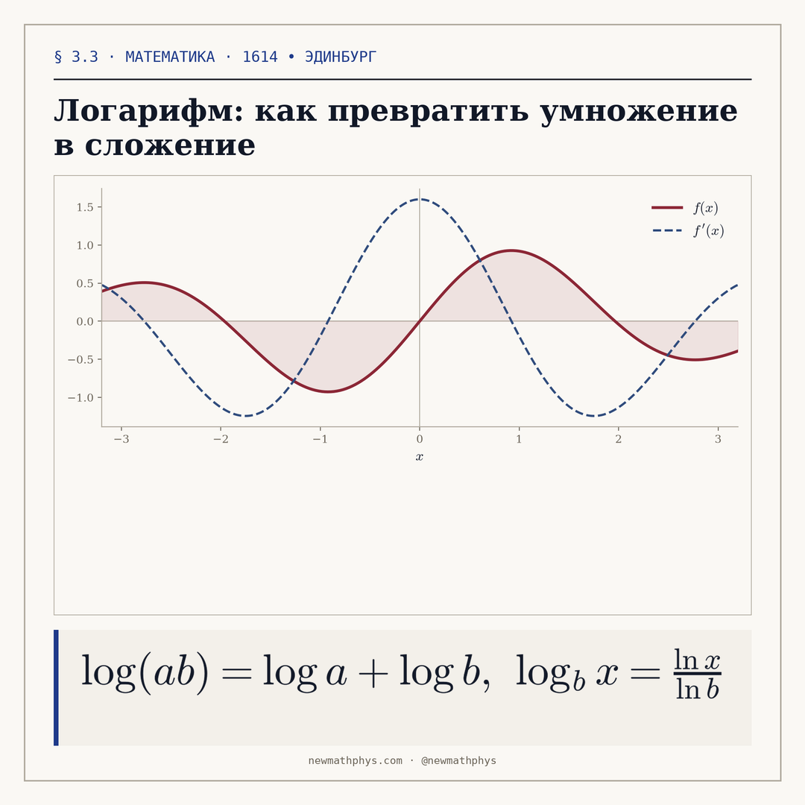
§ 3.3 · МАТЕМАТИКАВ программе курса
Логарифм: как превратить умножение в сложение
Джон Непер1614 • Эдинбург$\log(ab)=\log a+\log b, \quad \log_b x = \frac{\ln x}{\ln b}$
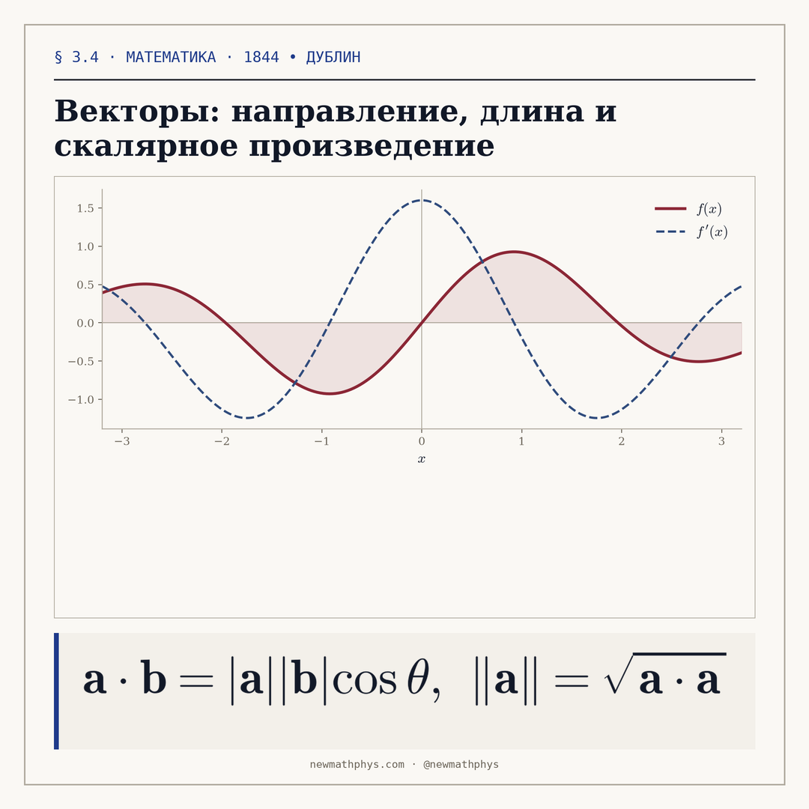
§ 3.4 · МАТЕМАТИКАВ программе курса
Векторы: направление, длина и скалярное произведение
Уильям Гамильтон и Герман Грассман1844 • Дублин$\mathbf{a}\cdot\mathbf{b}=|\mathbf{a}||\mathbf{b}|\cos\theta, \quad \|\mathbf{a}\|=\sqrt{\mathbf{a}\cdot\mathbf{a}}$
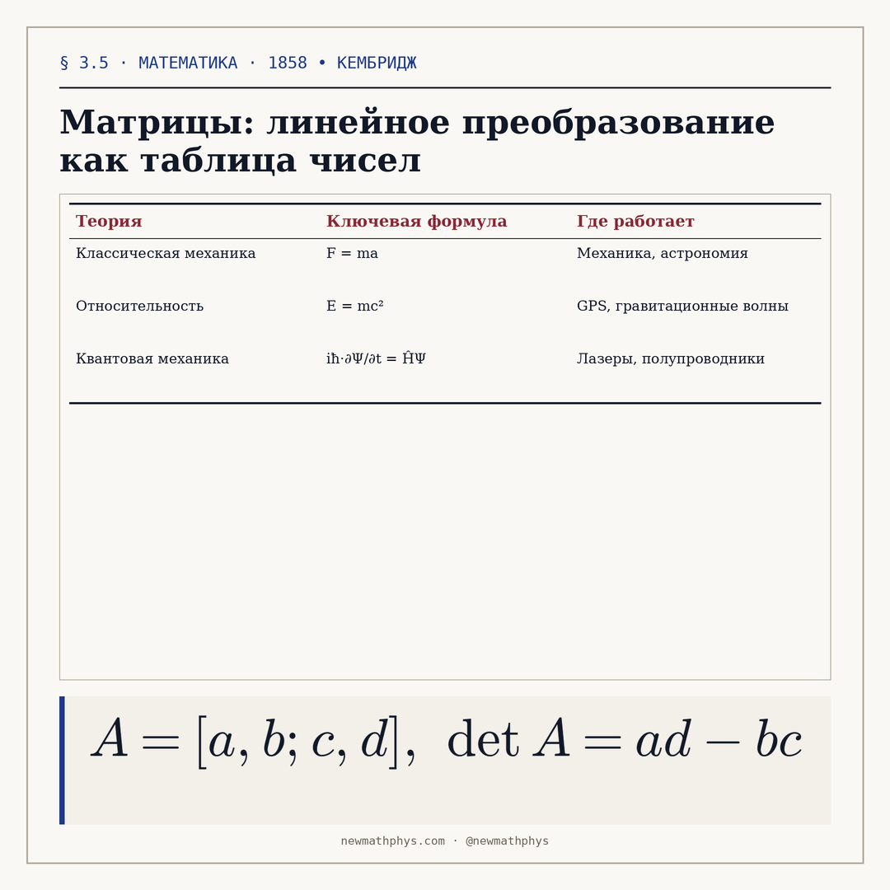
§ 3.5 · МАТЕМАТИКАВ программе курса
Матрицы: линейное преобразование как таблица чисел
Артур Кэли1858 • Кембридж$A = [a, b; c, d], \quad \det A = ad - bc$
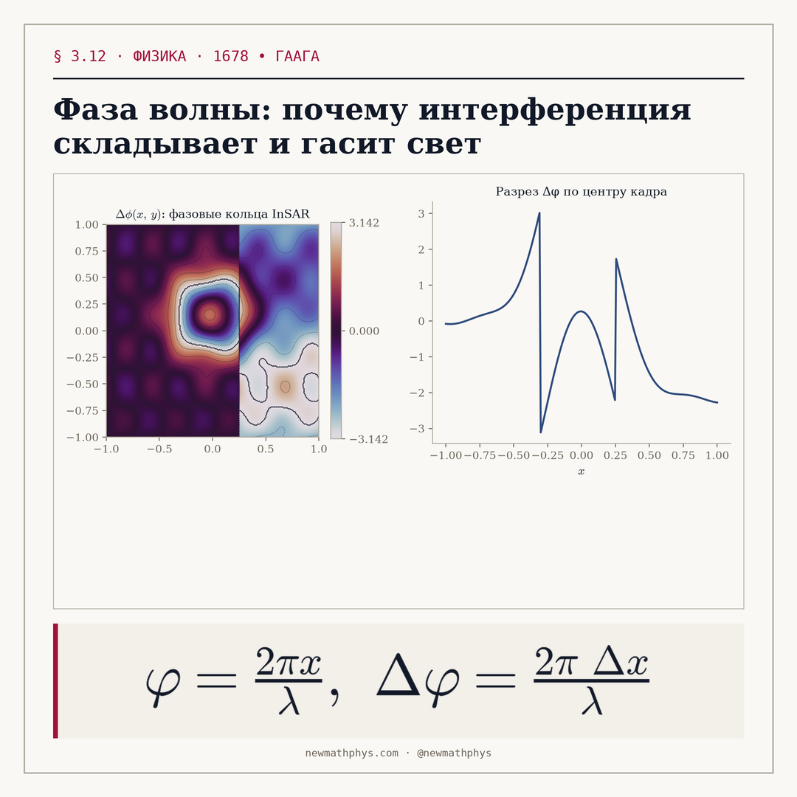
§ 3.12 · ФИЗИКАСледующий выпуск
Фаза волны: почему интерференция складывает и гасит свет
Христиан Гюйгенс1678 • Гаага$\varphi=\frac{2\pi x}{\lambda}, \quad \Delta\varphi=\frac{2\pi\,\Delta x}{\lambda}$
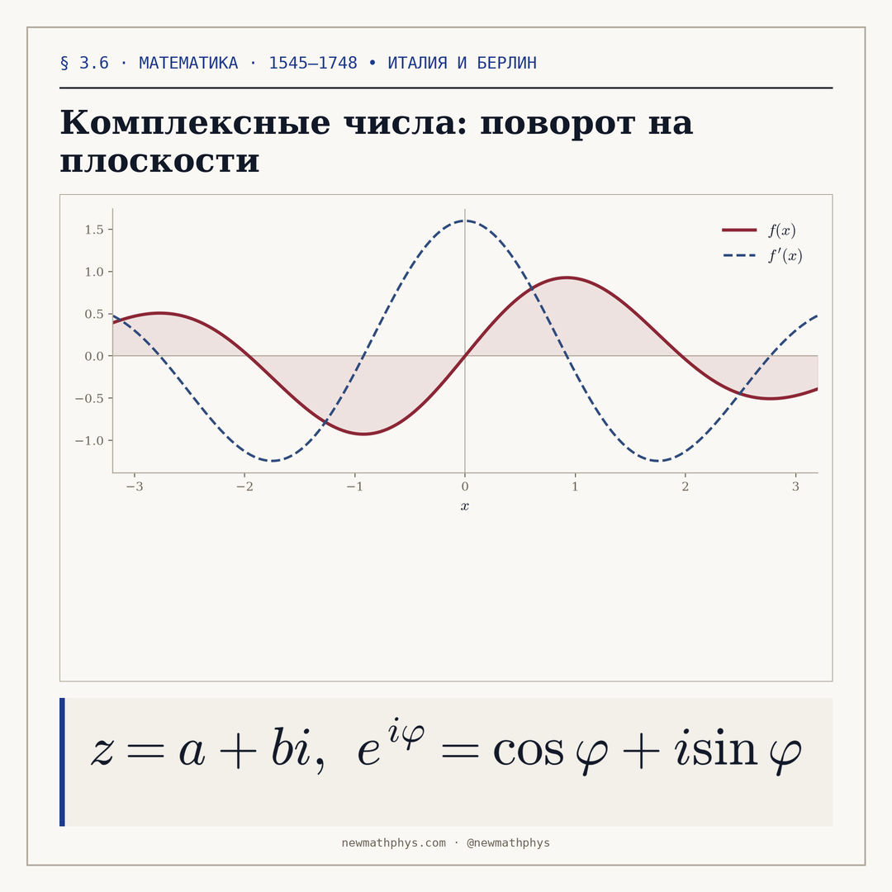
§ 3.6 · МАТЕМАТИКАВ программе курса
Комплексные числа: поворот на плоскости
Кардано, Эйлер1545–1748 • Италия и Берлин$z=a+bi, \quad e^{i\varphi}=\cos\varphi+i\sin\varphi$
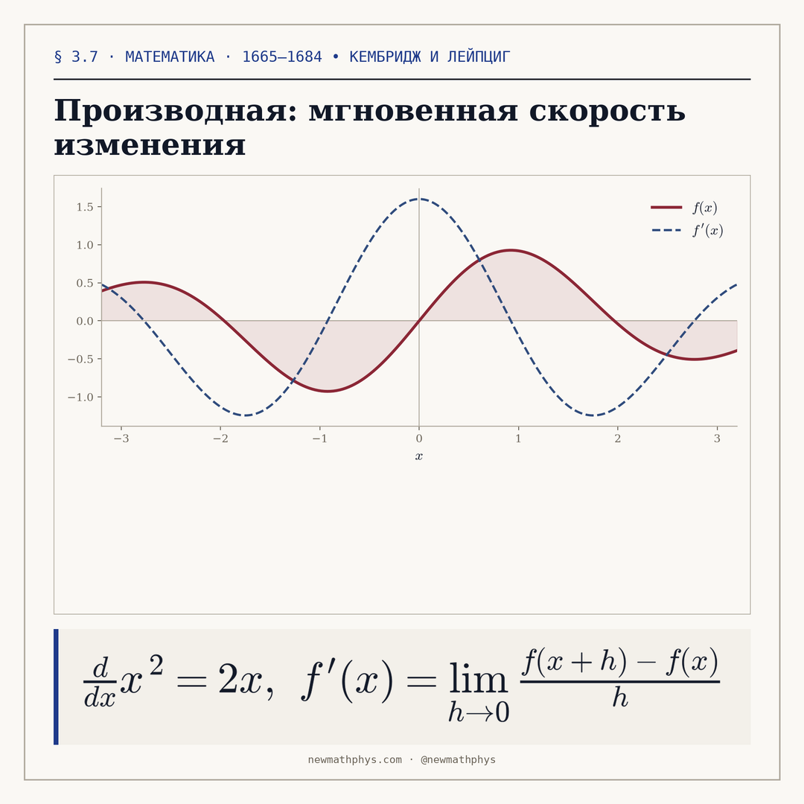
§ 3.7 · МАТЕМАТИКАВ программе курса
Производная: мгновенная скорость изменения
Ньютон и Лейбниц1665–1684 • Кембридж и Лейпциг$\frac{d}{dx}x^2=2x, \quad f'(x)=\lim_{h\to 0}\frac{f(x+h)-f(x)}{h}$
§ 3.13 · ФИЗИКАВ программе курса
Закон сохранения энергии: баланс без потерь
Джеймс Джоуль и Герман Гельмгольц1840-е • Манчестер$E_k+E_p=\mathrm{const}, \quad \frac{mv^2}{2}+mgh=\mathrm{const}$
§ 3.9 · ИНФОРМАТИКАВ программе курса
Конечные автоматы: память из состояний
Джордж Мили и Эдвард Мур1955 • Детройт$M=(Q,\Sigma,\delta,q_0,F), \quad \delta:Q\times\Sigma\to Q$
§ 3.10 · ИНФОРМАТИКАВ программе курса
Рекурсия: задача, определённая через себя
Джон Маккарти1960 • Стэнфорд$n!=n\cdot(n-1)!, \quad 0!=1$
СТУПЕНЬ IV
Рождение вычислений

§ 4.1 · МАТЕМАТИКАОткрыто
Фурье: разложение сигнала на гармоники
Жозеф Фурье1822 г. • Париж$f(x) = \frac{a_0}{2} + \sum_{n=1}^{\infty}\left(a_n\cos nx + b_n\sin nx\right)$

§ 4.12 · ФИЗИКАВ программе курса
Максвелл: уравнения электромагнитного поля
Джеймс Клерк Максвелл1865 г. • Лондон$\nabla \cdot \mathbf{E} = \frac{\rho}{\varepsilon_0}, \quad \nabla \times \mathbf{B} = \mu_0\mathbf{J} + \mu_0\varepsilon_0\frac{\partial \mathbf{E}}{\partial t}$

§ 4.2 · МАТЕМАТИКАОткрыто
Нётер: симметрия и законы сохранения
Эмми Нётер1918 г. • Гёттинген$\frac{d}{dt}Q = 0 \quad \Longleftrightarrow \quad \delta S = 0 \text{ при непрерывной симметрии}$

§ 4.3 · МАТЕМАТИКАВ программе курса
Гаусс: нормальное распределение и метод наименьших квадратов
Карл Фридрих Гаусс1809 г. • Гёттинген$p(x) = \frac{1}{\sigma\sqrt{2\pi}} e^{-\frac{(x-\mu)^2}{2\sigma^2}}$
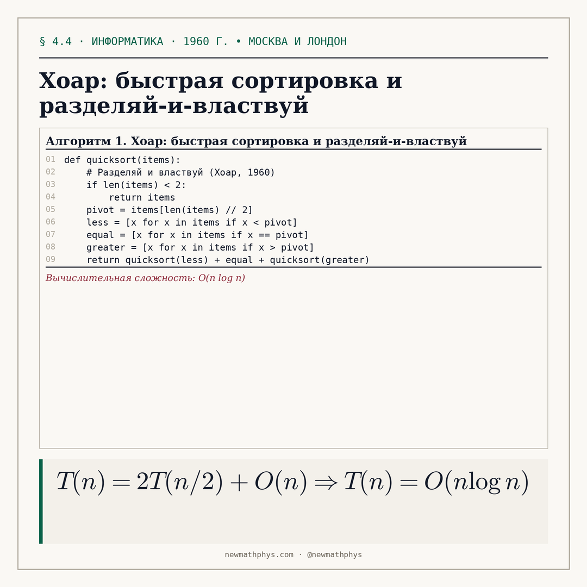
§ 4.7 · ИНФОРМАТИКАОткрыто
Хоар: быстрая сортировка и разделяй-и-властвуй
Тони Хоар1960 г. • Москва и Лондон$T(n) = 2T(n/2) + O(n) \Rightarrow T(n) = O(n \log n)$

§ 4.13 · ФИЗИКАВ программе курса
Больцман: энтропия как число состояний
Людвиг Больцман1877 г. • Вена$S = k_B \ln W, \quad \Delta S \geqq 0$
§ 4.8 · ИНФОРМАТИКАВ программе курса
Мак-Каллок и Питтс: логический нейрон и порог
Уоррен Мак-Каллок и Уолтер Питтс1943 • Чикаго$y = \sum_i w_i x_i \geqq \theta$
§ 4.4 · МАТЕМАТИКАВ программе курса
Малая теорема Ферма: арифметика остатков
Пьер Ферма1640 • Париж$a^{p-1}=1\ (\mathrm{mod}\ p), \quad a^{\varphi(n)}=1\ (\mathrm{mod}\ n)$
§ 4.5 · МАТЕМАТИКАВ программе курса
Вероятность: язык неопределённости
Паскаль и Ферма1654 • Париж$P(A)=\frac{|A|}{|\Omega|}, \quad 0\leq P(A)\leq 1$
§ 4.6 · МАТЕМАТИКАВ программе курса
Теорема Байеса: как обновлять убеждения
Томас Байес1763 • Лондон$P(A\mid B)=\frac{P(B\mid A)P(A)}{P(B)}$
§ 4.14 · ФИЗИКАВ программе курса
Термодинамика: предел тепловой машины
Сади Карно1824 • Париж$\eta=1-\frac{T_c}{T_h}, \quad \Delta S\geq 0$
§ 4.15 · ФИЗИКАВ программе курса
Электромагнитная волна: свет как колебание поля
Генрих Герц1887 • Карлсруэ$c=\lambda f, \quad c=\frac{1}{\sqrt{\varepsilon_0\mu_0}}$
§ 4.9 · ИНФОРМАТИКАВ программе курса
Хеш-таблица: поиск за постоянное время
Ханс Петер Лун1953 • IBM$h(k)=k\bmod m, \quad \mathbb{E}[T_{\mathrm{search}}]=O(1)$
§ 4.10 · ИНФОРМАТИКАВ программе курса
Алгоритмы на графах: кратчайший путь
Эдсгер Дейкстра1956–1959 • Амстердам$d(v)=\min_{(u,v)\in E}\left(d(u)+w(u,v)\right)$
§ 4.11 · ИНФОРМАТИКАВ программе курса
Обратная связь: управление по ошибке
Норберт Винер1948 • Кембридж$e=r-y, \quad u=K_p e+K_i\int e\,dt+K_d\frac{de}{dt}$
СТУПЕНЬ V
Квантовый мир

§ 5.3 · ИНФОРМАТИКАОткрыто
Тьюринг: машина, определившая границы вычислений
Алан Тьюринг1936 г. • Кембридж$M = (Q, \Gamma, b, \Sigma, \delta, q_0, F), \quad \delta: Q \times \Gamma \to Q \times \Gamma \times \{L, R\}$

§ 5.4 · ИНФОРМАТИКАОткрыто
Шеннон: энтропия и рождение теории информации
Клод Шеннон1948 г. • Bell Labs$H(X) = -\sum_{i} p_i \log_2 p_i, \quad C = B \log_2\left(1 + \frac{S}{N}\right)$
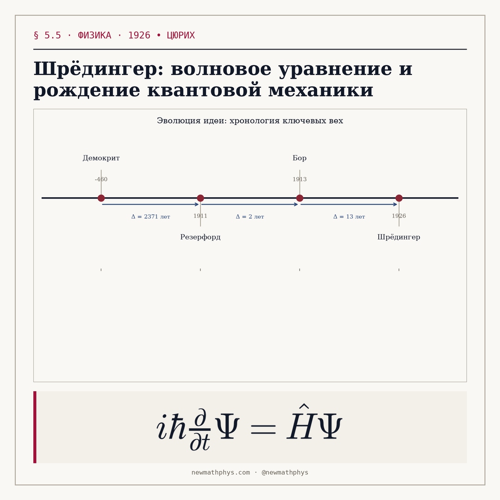
§ 5.9 · ФИЗИКАВ программе курса
Шрёдингер: волновое уравнение и рождение квантовой механики
Эрвин Шрёдингер1926 • Цюрих$i\hbar \frac{\partial}{\partial t}\Psi = \hat{H}\Psi$
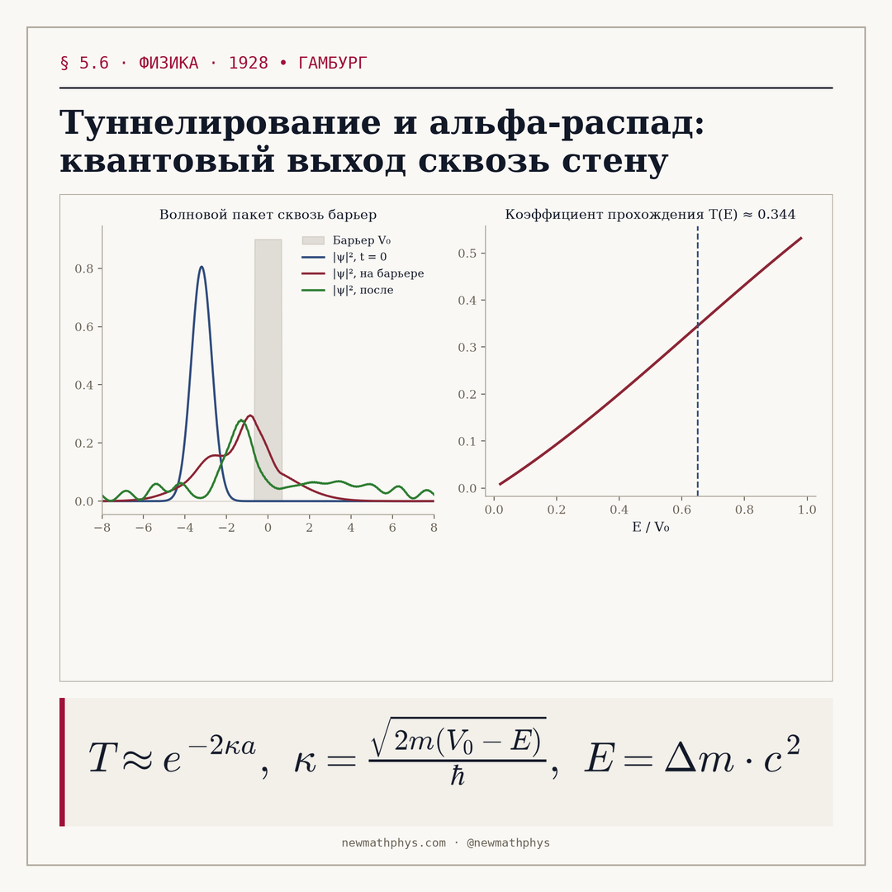
§ 5.10 · ФИЗИКАВ программе курса
Туннелирование и альфа-распад: квантовый выход сквозь стену
Джордж Гамов1928 • Гамбург$T \approx e^{-2\kappa a}, \quad \kappa = \frac{\sqrt{2m(V_0 - E)}}{\hbar}, \quad E = \Delta m \cdot c^2$
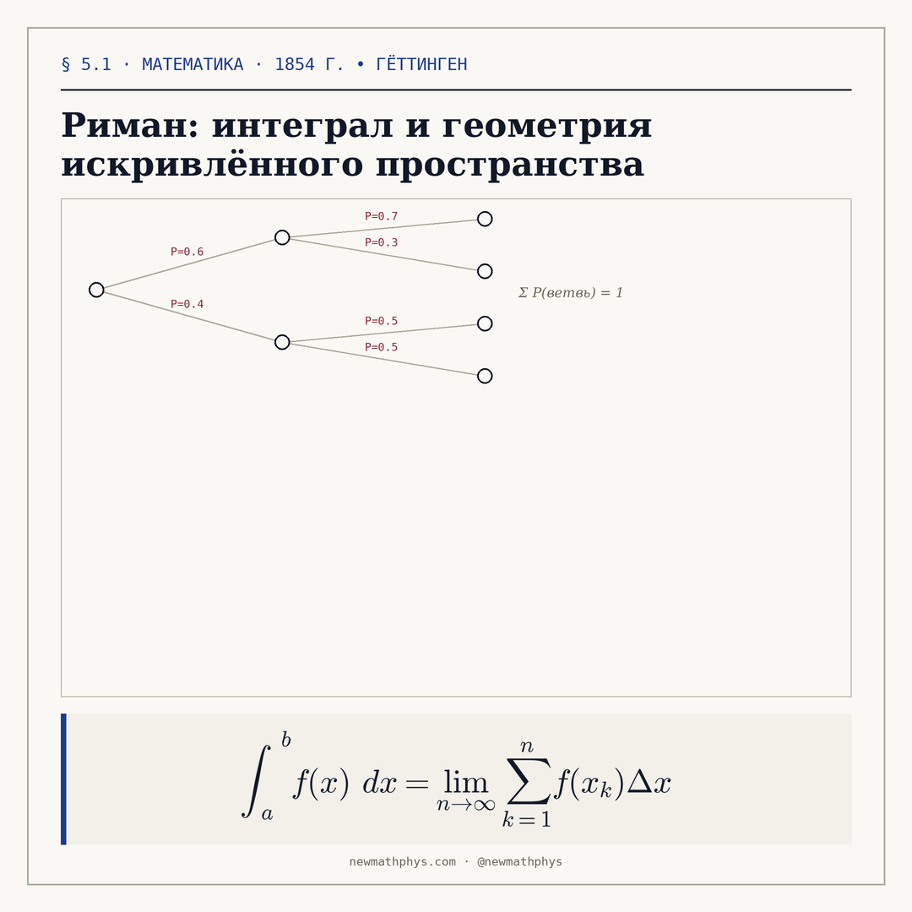
§ 5.1 · МАТЕМАТИКАВ программе курса
Риман: интеграл и геометрия искривлённого пространства
Бернхард Риман1854 г. • Гёттинген$\int_a^b f(x)\,dx = \lim_{n\to\infty} \sum_{k=1}^{n} f(x_k)\Delta x$

§ 5.5 · ИНФОРМАТИКАОткрыто
Дейкстра: кратчайший путь и дисциплина структурного кода
Эдсгер Дейкстра1956–1959 • Амстердам$d(v) = \min_{(u,v) \in E} \left( d(u) + w(u, v) \right)$
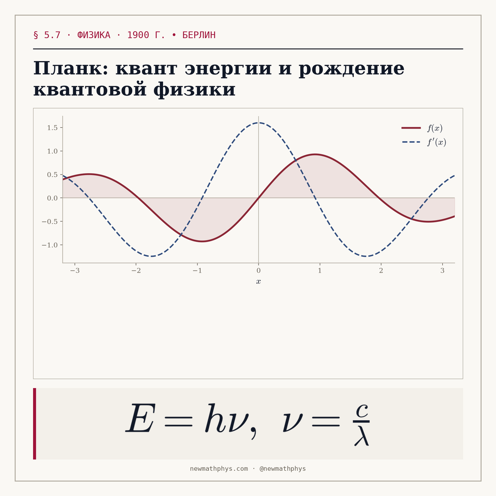
§ 5.11 · ФИЗИКАВ программе курса
Планк: квант энергии и рождение квантовой физики
Макс Планк1900 г. • Берлин$E = h\nu, \quad \nu = \frac{c}{\lambda}$
§ 5.2 · МАТЕМАТИКАВ программе курса
Дифференциальные уравнения: законы в движении
Ньютон, Лейбниц, Эйлер1671–1740 • Европа$y'=ky, \quad y(t)=y_0e^{kt}$
§ 5.12 · ФИЗИКАВ программе курса
Неопределённость: предел одновременного измерения
Вернер Гейзенберг1927 • Копенгаген$\Delta x\,\Delta p\geq\frac{\hbar}{2}, \quad \Delta E\,\Delta t\geq\frac{\hbar}{2}$
§ 5.6 · ИНФОРМАТИКАВ программе курса
Теория информации: сколько стоит неопределённость
Клод Шеннон1948 • Bell Labs$H(X)=-\sum_i p_i\log_2 p_i, \quad C=B\log_2(1+S/N)$
§ 5.7 · ИНФОРМАТИКАВ программе курса
Гомеостаз: система, которая держит себя
Уильям Эшби и Николай Амосов1948–1961 • Иллинойс и Киев$e(t)=r(t)-y(t), \quad \frac{de}{dt}\to 0$
§ 5.8 · ИНФОРМАТИКАВ программе курса
Матрицы Адамара: ортогональность на максимуме
Жак Адамар и Николай Балонин1893–2026 • Европа$H_nH_n^T=nI, \quad H_{2n}=H_2\otimes H_n$
СТУПЕНЬ VI
Прикладные гиганты
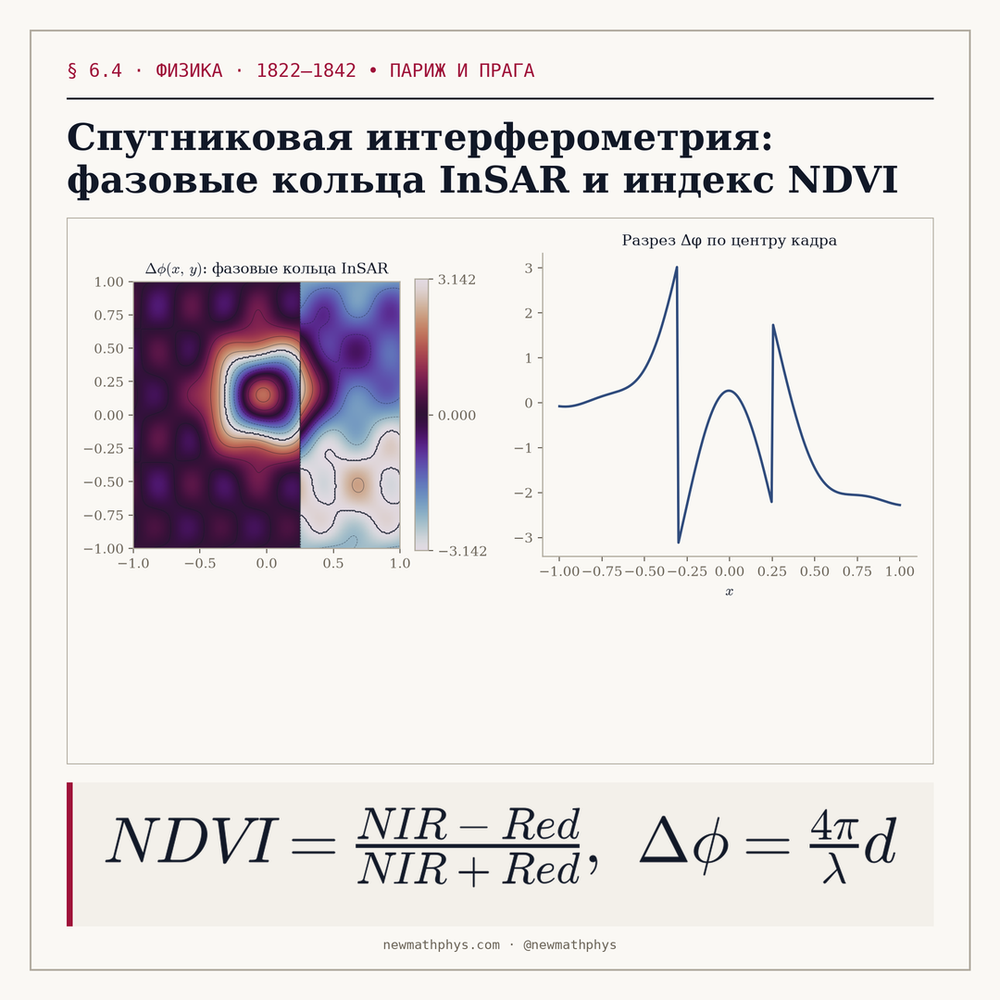
§ 6.5 · ФИЗИКАВ программе курса
Спутниковая интерферометрия: фазовые кольца InSAR и индекс NDVI
Жозеф Фурье и Кристиан Доплер1822–1842 • Париж и Прага$NDVI = \frac{NIR - Red}{NIR + Red}, \quad \Delta\phi = \frac{4\pi}{\lambda} d$

§ 6.6 · ФИЗИКАОткрыто
Шварцшильд: метрика чёрной дыры и линзирование света
Карл Шварцшильд1916 • Русский фронт, затем Потсдам$r_s = \frac{2GM}{c^2}, \quad \alpha = \frac{4GM}{c^2 b}$

§ 6.2 · ИНФОРМАТИКАОткрыто
Молекулярная динамика и хаос: потенциал Леннард-Джонса и аттрактор Лоренца
Джон Леннард-Джонс и Эдвард Лоренц1929 и 1963 • Кембридж и MIT$V(r) = 4\varepsilon\left[\left(\frac{\sigma}{r}\right)^{12} - \left(\frac{\sigma}{r}\right)^{6}\right]$
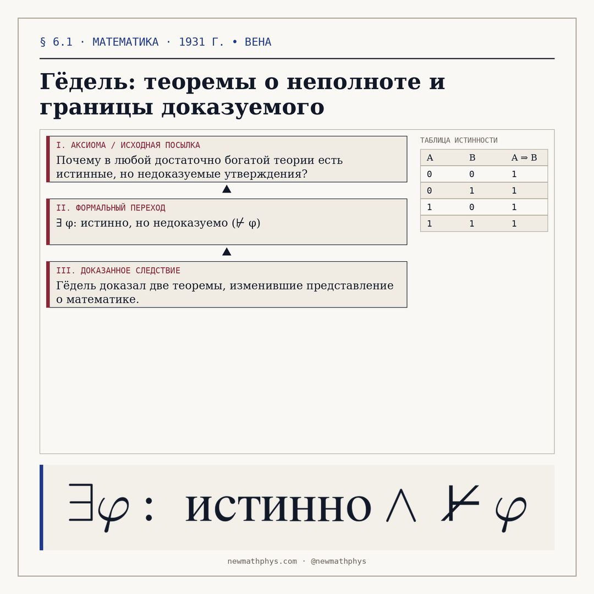
§ 6.1 · МАТЕМАТИКАВ программе курса
Гёдель: теоремы о неполноте и границы доказуемого
Курт Гёдель1931 г. • Вена$\exists \varphi: \; \text{истинно} \land \nvdash \varphi$
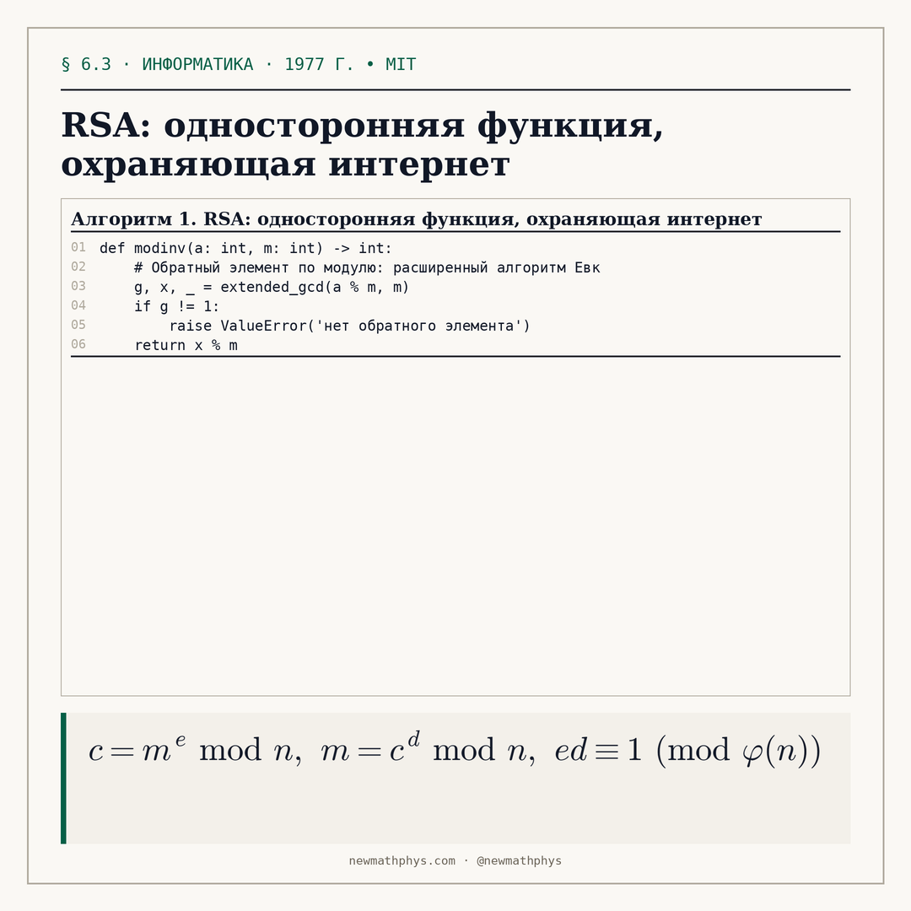
§ 6.3 · ИНФОРМАТИКАВ программе курса
RSA: односторонняя функция, охраняющая интернет
Ривест, Шамир и Адлеман1977 г. • MIT$c = m^e \bmod n, \quad m = c^d \bmod n, \quad e d \equiv 1 \pmod{\varphi(n)}$
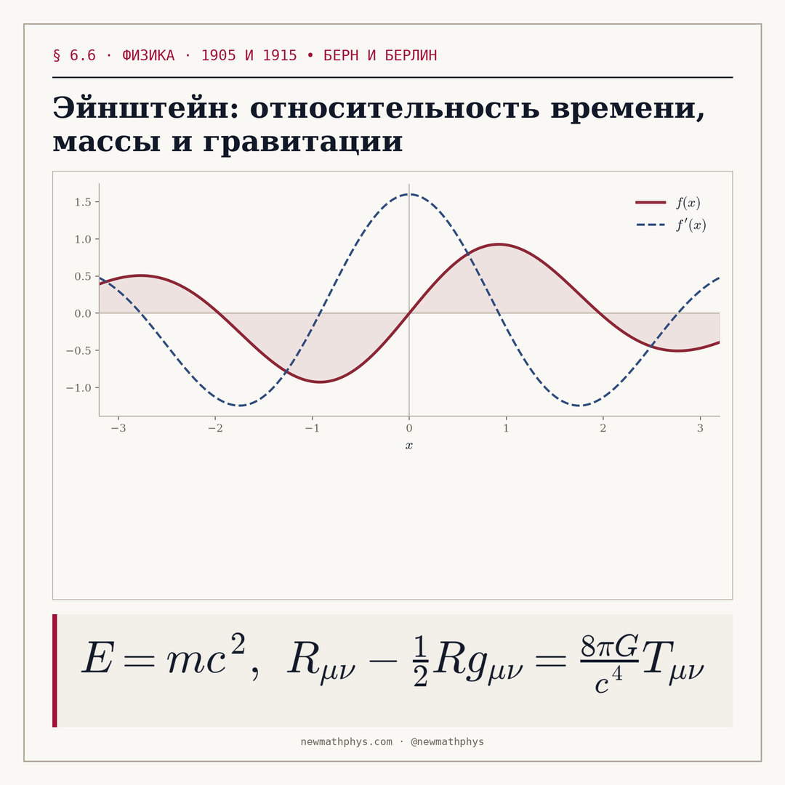
§ 6.7 · ФИЗИКАВ программе курса
Эйнштейн: относительность времени, массы и гравитации
Альберт Эйнштейн1905 и 1915 • Берн и Берлин$E = mc^2, \quad R_{\mu\nu} - \frac{1}{2} R g_{\mu\nu} = \frac{8\pi G}{c^4} T_{\mu\nu}$
§ 6.8 · ФИЗИКАВ программе курса
Гравитационные волны: рябь пространства-времени
Эйнштейн, LIGO/Virgo1916–2015 • Берлин и LIGO$h\sim\frac{2GM}{c^2r}, \quad f_{\mathrm{gw}}\sim\frac{1}{T_{\mathrm{orbit}}}$
§ 6.4 · ИНФОРМАТИКАВ программе курса
Машинное обучение: градиент вместо правил
Розенблатт, Румельхарт, Хинтон1958–1986 • Корнелл и Торонто$\theta\leftarrow\theta-\eta\nabla_\theta L(\theta)$
ПРОЧЕЕ